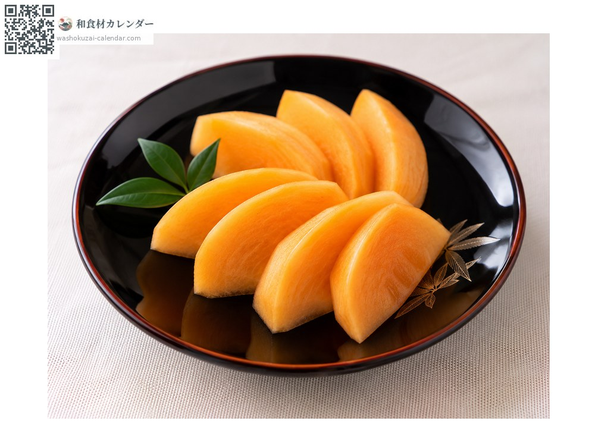
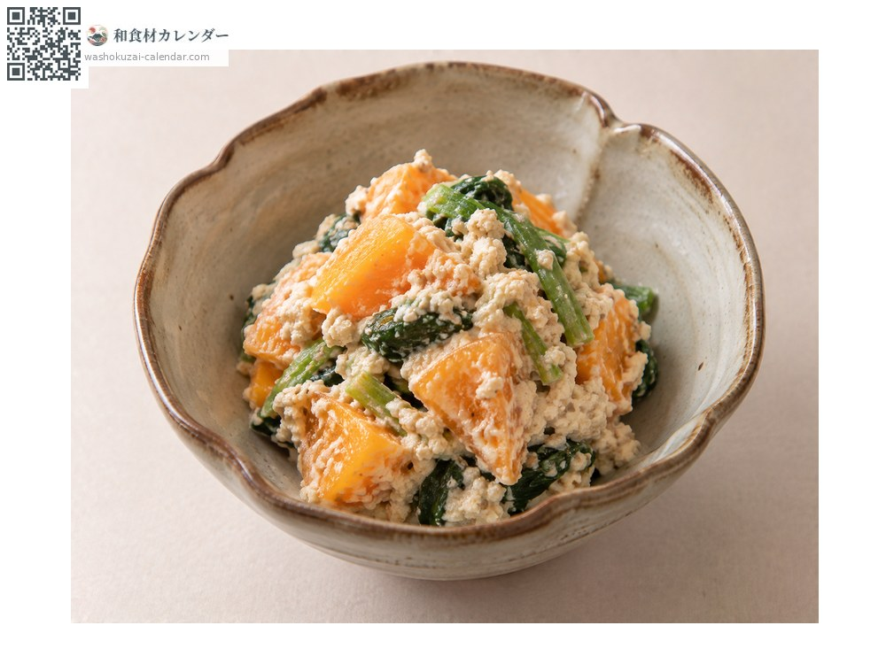
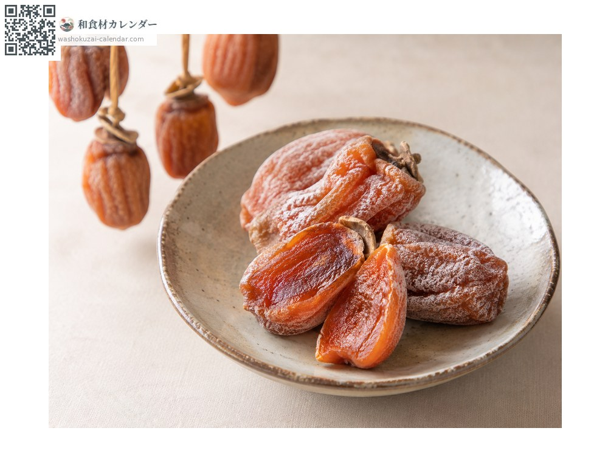
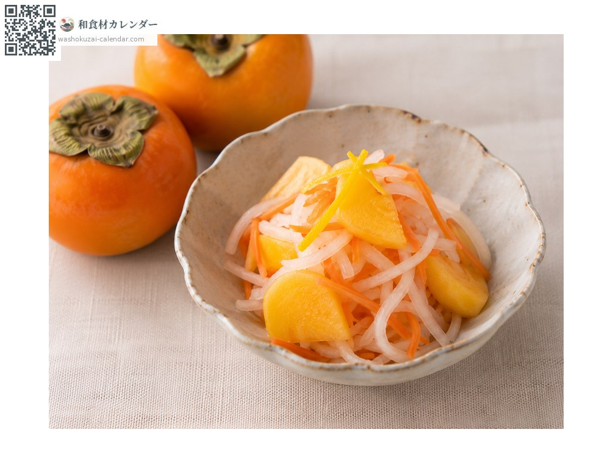

果物
カキ
かき
別名・別表記柿、富有柿、kaki
旬は10月・11月

旬の時期
1月
2月
3月
4月
5月
6月
7月
8月
9月
10月
11月
12月
旬出回り
調理法

そのまま
皮をむいて。

白和え
豆腐と和える。

干し柿
渋柿を干して甘くする。

なます
大根と合わせて。
選び方
ヘタが果実に張り付き、色が濃く均一なもの。持って重みがあるもの。
保存方法
ヘタを下にして冷蔵。硬いものは常温で追熟させる。
主な産地
豆知識
渋柿は干す、またはアルコールや炭酸ガスで処理すると渋が抜ける。渋の成分自体が消えるわけではなく、溶けなくなる。